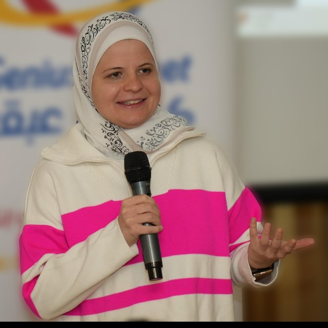

Speech foundation models
Self-supervised models that learn speaker-discriminative structure, not just content — so a single backbone serves verification, diarization, and profiling.
I build speech foundation models and explainable speaker-verification systems — methods that recognize a voice, describe it in language, and hold up under the messy conditions of the real world. PhD at Carnegie Mellon, advised by Bhiksha Raj.

mbaali@cs.cmu.eduMy work sits where representation learning meets the practical demands of voice systems — making them descriptive, trustworthy, and robust.
Self-supervised models that learn speaker-discriminative structure, not just content — so a single backbone serves verification, diarization, and profiling.
Systems that don't just decide — they say why. Phonetic debiasing and language-model profiling turn opaque embeddings into descriptions a human can read.
Bridging audio and text: prompt-conditioned models that caption a voice in natural language and generalize zero-shot to new speaker traits.
Stress-testing voice systems against noise, channel mismatch, and adversarial conditions through comprehensive, reproducible benchmarks.